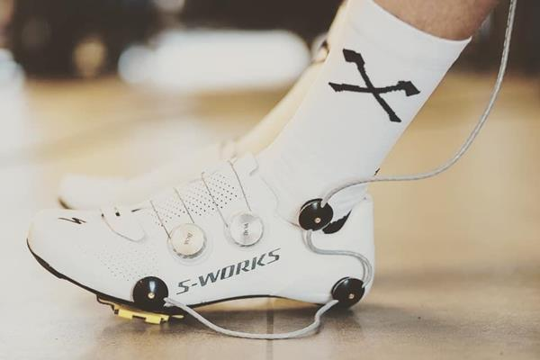
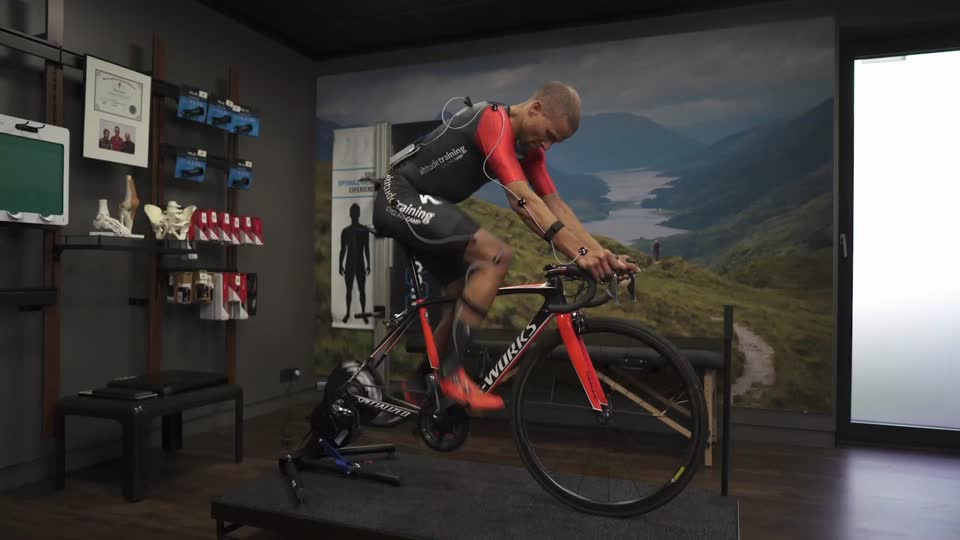
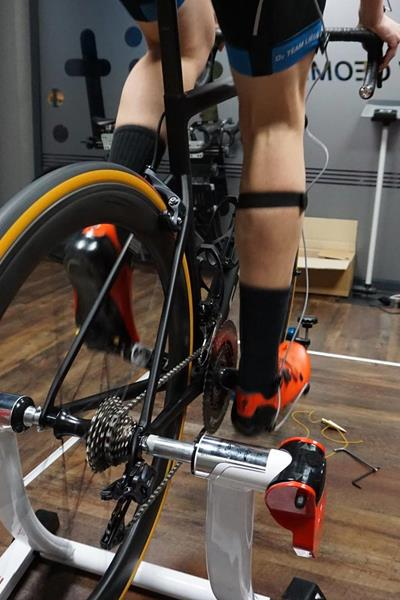

Eingestelltes Rad
Sattelhöhe, Sattelposition, Cockpit und Cleats – auf dich angepasst.
Retül-Bikefitting · 3D-Motion-Capture
Du und dein Bike gehören zusammen. Mit einer individuellen 3D-Analyse und Einstellung finden wir eine Sitzposition für deine Fahrgewohnheiten – mit Achim, Retül-zertifiziert.

01 · Marker setzen
Acht LED-Marker an Handgelenk, Ellbogen, Schulter, Hüfte, Knie, Knöchel, Ferse und Fußspitze. Retül erfasst sie in 3D – auf deinem eigenen Rad.
02 · Messen in Bewegung
Du trittst, Retül misst live: Kniewinkel, Hüftwinkel, Sattelhöhe. Hier sitzt der Sattel zu tief – das Knie bleibt unten zu stark gebeugt.
03 · Anpassen
Sattel hoch, neu messen, prüfen. Achim stellt ein, bis die Werte zu deinem Körper und deinen Zielen passen.
04 · Ergebnis
Mehr Streckung, offenerer Hüftwinkel, runder Tritt. Das Setup wird dokumentiert.
Sitzposition optimiertAnimierte Beispiel-Messung – keine echten Kundendaten.
Ablauf · rund 1,5 Stunden
Deine Ziele und dein Fahrgefühl geben die Richtung vor. Retül unterstützt die Analyse deiner Bewegung auf dem Rad. Ablauf und Kosten klärst du bei der Terminanfrage.
Wir besprechen deine Fahrgewohnheiten, Ziele, Beschwerden und bisherigen Erfahrungen mit der Sitzposition. Dazu Beweglichkeit und Fußvermessung.
LED-Marker und eine 3D-Bewegungsmessung helfen dabei, deine Position unter Belastung zu betrachten – auf deinem eigenen Rad.
Sattel, Cockpit, Cleats: Das Setup wird gemeinsam angepasst, nachgemessen und dokumentiert.
Was du mitnimmst
Sattelhöhe, Sattelposition, Cockpit und Cleats – auf dich angepasst.
Deine Werte bleiben festgehalten – praktisch für das nächste Rad.
3D-Messung in Bewegung statt Tabellenwert nach Körpergröße.
Vor dem Kauf: Welche Rahmengröße und Geometrie wirklich zu dir passen.



Termin · Retül-Bikefitting
Sag uns, welches Rad du fährst und was dich stört – der KI-Berater bereitet deine Anfrage vor, Achim bestätigt den Termin persönlich.
Termine werden nur als Anfrage vorbereitet – gebucht wird erst durch das Racepoint-Team.